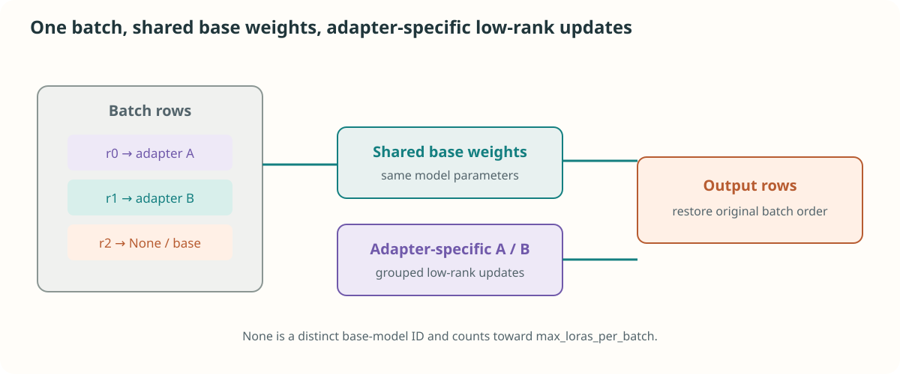
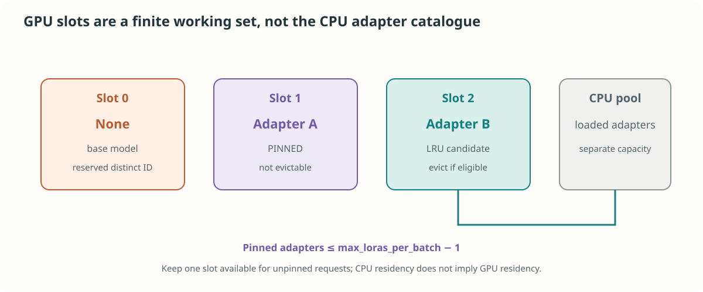

第 20 章 · Multi-LoRA 调度
Multi-LoRA：Scheduler、GPU Slots、Dynamic Loading 与 DPA Constraints
理解异构 adapter batch、CPU/GPU residency、None base slot、LRU/pinning、dynamic load、overlap 和 KV namespace。
理解异构 adapter batch、CPU/GPU residency、None base slot、LRU/pinning、dynamic load、overlap 和 KV namespace。 本章以 SGLang 固定 commit 为实现证据，把论文背景、当前运行时、教学模型和部署限制分开说明。
读完本章，你应该能
- 沿着真实控制流解释输入、状态、调度决策和输出。
- 识别资源限制、缓存命中与网络传输之间的权衡。
- 用 CPU toy 实验验证边界，而不把 toy 当成 GPU benchmark。
1. Multi-LoRA：同一个 batch 为什么可以跑不同 adapter？
LoRA 将低秩更新加到 base model 的部分 linear modules。Multi-LoRA serving 允许 batch 中不同 sequence 选择不同 adapter，甚至有些 sequence 走 base model（adapter ID 为 None）。系统要同时管理 adapter weights 的 CPU/GPU residency、batch 中的 adapter IDs、GPU slots 和 LoRA-specific kernels。
这不是把每个 adapter 复制成一份完整模型。Base weights 仍共享；LoRA A/B matrices 按 adapter 选择，在 dense 或 MoE modules 上执行对应低秩路径。
2. Heterogeneous batch：按 adapter 分组，再执行 LoRA kernels

批次构建时要把 request rows 与 adapter IDs 对齐；LoRA backend 根据每行所属 adapter，执行对应的 A/B projection 或 grouped/chunked kernel。适配器数量越多，metadata、grouping 和 kernel launch 组织也越复杂。
若模型使用 MoE，LoRA 还要跟着 local expert IDs / MoE TP layout 走；不能简单拿全局 TP size 推导每个 expert LoRA buffer shape。
3. CPU loaded adapters 与 GPU batch slots 是两种容量
max_loaded_loras 控制同时驻留 CPU memory 的 adapter 数；max_loras_per_batch 控制 GPU pool 中一个 batch 可容纳的 distinct adapter IDs，并且包含 base-model None。这两个值不能互换。
GPU slot 是计算热路径的容量：请求进入 batch 前，需要确保所需 adapter weights 可在 GPU 上使用。若 slot 不够，系统需要等待、evict 未 pinned adapter，或在合适配置下 drain 部分 running adapter。CPU loaded adapter 仍可作为下一次 H2D load 的来源。
4. Slot pool：LRU、FIFO、Pinned 与 base slot

当前文档支持 LRU（默认）和 FIFO eviction policy。Pinned adapter 会固定在 GPU pool slot，直到显式 unload；但 pinning 降低动态加载弹性。为避免所有 slots 都被 pinned，文档限制 pinned adapter 数量最多为 max_loras_per_batch - 1。
GPU pool slot count 是 distinct adapter IDs，不是 batch rows，也不是 LoRA rank。Rank 影响单个 adapter 的参数量和 kernel shape，slot count 影响一个 batch 能混合多少不同 adapter。
5. Dynamic load：管理 API 与 shape contract
除了启动时 --lora-paths，SGLang 还支持 /load_lora_adapter 和 /unload_lora_adapter。这两个是 admin endpoints，需要配置 SGLANG_ADMIN_API_KEY 或 --admin-api-key，并用 Bearer token 认证；普通 --api-key 不会解锁 admin 操作。
动态加载建议启动时显式声明 --max-lora-rank 与 --lora-target-modules。若靠启动 adapters 推断，后续 adapter 必须满足同样 shape 或更小约束。动态加载不是任意 shape 的运行时热插拔。
管理 API 会影响所有 worker/rank 的一致状态；生产操作需要审计 adapter name/path、权限、load success、unload success 和正在执行的 batch 是否仍引用 adapter。
6. Overlap loading / scheduler drain：隐藏 H2D，不等于没有成本
enable_lora_overlap_loading 可让 adapter weight loading 与 GPU compute 重叠，适合 adapter 权重加载本身成为瓶颈的场景。它需要合适的 memory pool/backend 支持；不是所有 DP attention topology 都能安全使用 overlap loading。
lora_drain_wait_threshold 允许 scheduler 在某个 adapter 的最老等待请求超过阈值后，drain 一个 unpinned running adapter 为其腾出空间。该策略是 best-effort：阈值触发不代表系统预留了一个空 slot，也不保证等待时间上界。Pinned adapter 不会被 drain。
7. DP Attention、CUDA Graph 与 backend 兼容
LoRA memory pool 的 slot layout 必须与 DP attention、attention TP/CP、MoE EP/TP group 和 CUDA Graph metadata 一致。某些 pool 支持跨 DP ranks 协调 slot，而另一些 pool 不支持 overlap loading；manager 会根据能力拒绝不兼容配置，而不是假设每个 rank 可独立选择不同 adapter slots。
当前代码还会在 decode / prefill CUDA Graph 路径准备 batch metadata 与 MoE buffers。更改 max-loras-per-batch、max rank、target modules、adapter shape 或 MoE topology 后，应重新验证 graph capture 与 static metadata 的边界。
8. LoRA 与 Prefix KV Cache：缓存命中必须尊重 adapter identity
同一个 token prefix 在不同 LoRA adapter 下，隐藏状态与 KV 通常不同。即使 prompt token IDs 完全相同，也不能把 adapter A 计算的 KV 直接给 adapter B 使用。Prefix cache identity 必须把模型、tokenizer、adapter/cache namespace 与 KV layout 的兼容条件纳入考虑。
这也解释了为什么 LoRA 路由和 KV-aware routing 之间存在关系：Router 可能保留 model:adapter 语法，但 cache-aware selection 必须比较同一兼容 namespace 的 prefix signals。把 adapter name 忽略掉，会把“文本前缀一样”误当成“KV 可复用”。
9. 一个简单 slot / load 成本模型
若 batch 同时包含 base-model 请求，None 也算一个 distinct ID；因此可供其他 adapters 使用的 slot 数会减少。Pinned 数量上限则为 max_loras_per_batch - 1，保证至少保留一个可供非 pinned 请求使用的空间。
调优时同时看 adapter working set、adapter arrival rate、GPU slot miss / load time、CPU resident count、H2D overlap、queue delay、pinned fraction 和每个 batch 的 distinct adapter count。
10. 交互：调整 slot budget 与 pinning
GPU LoRA pool policy
LRU：空间不足时，优先考虑最近最少使用的未 pinned adapter；命中频率与 working set 决定 churn。
Pinned：热 adapter 留在 GPU slot，减少反复 H2D；但 pinned 数不得占满 max_loras_per_batch，否则未 pinned 请求可能 starvation。
Drain：等待 adapter 达阈值后，scheduler 可尝试 drain 一个 unpinned running adapter；best-effort，不承诺 slot reservation 或最大等待时长。
运行 lora_scheduler.py，测试 base None、LRU、pinned adapter 与 slot exhaustion。
11. 源码阅读路线与参考资料
- LoRA Serving docs：server args、dynamic load、pinning、drain 与 backend。
- lora_manager.py：batch metadata、pool construction、overlap loading compatibility。
- mem_pool.py：GPU slots、rank context 与 eviction。
- sgl-router README：model:adapter suffix routing behavior。
背景论文：S-LoRA 与 Punica。论文提出的系统机制与当前 SGLang 运行时实现需要分别阅读。
实现快照：sgl-project/sglang@ac0243723b0dcba177f8792979daaa2f8d6ee6ea。